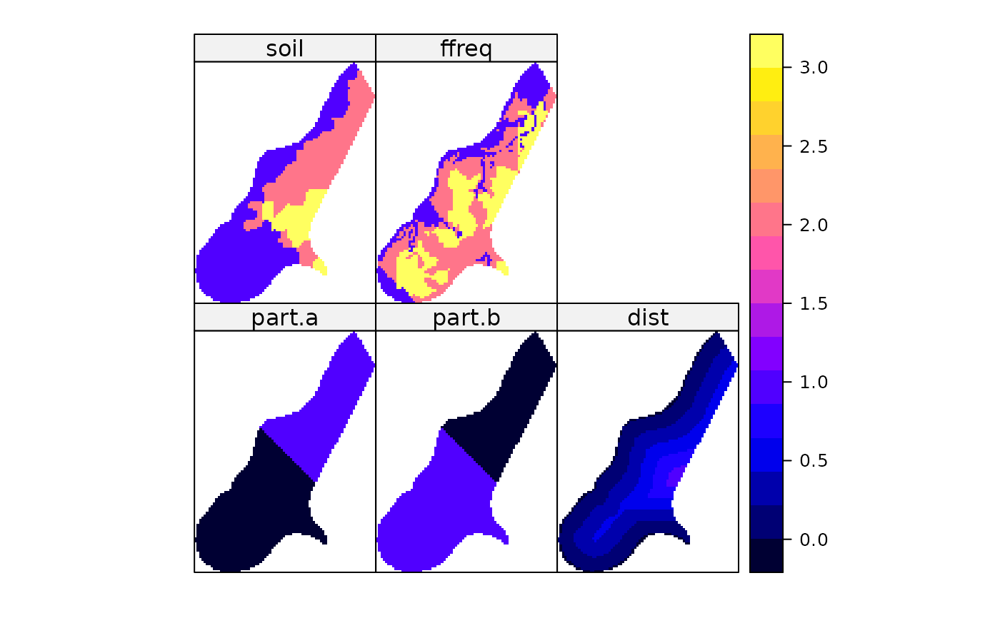

meuse.grid.RdThe meuse.grid data frame has 3103 rows and 7 columns;
a grid with 40 m x 40 m spacing that covers the Meuse study area (see meuse)
data(meuse.grid)This data frame contains the following columns:
a numeric vector; x-coordinate (see meuse)
a numeric vector; y-coordinate (see meuse)
distance to the Meuse river; obtained by a spread (spatial distance) GIS operation, from border of river; normalized to $[0,1]$
flooding frequency class, for definitions see this item in meuse; it is not known how this map was generated
arbitrary division of the area in two areas, a and b
see part.a
soil type, for definitions see this item in meuse; it is questionable whether these data come from a real soil map, they do not match the published 1:50 000 map
x and y are in RD New, the Dutch topographical map
coordinate system. Roger Bivand projected this to UTM in the
R-Grass interface package.
See the meuse documentation
data(meuse.grid)
coordinates(meuse.grid) = ~x+y
proj4string(meuse.grid) <- CRS("+init=epsg:28992")
gridded(meuse.grid) = TRUE
spplot(meuse.grid)
